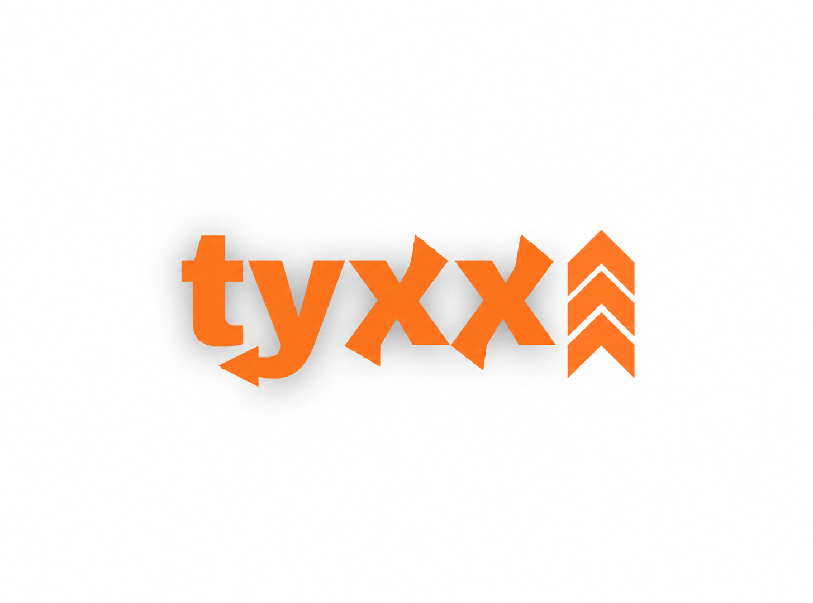

PRESENCIA Y CONSULTAS
Desarrollo web
Una presencia clara para que tus futuros clientes entiendan tu propuesta, conozcan tu trabajo y sepan cómo contactarte.
↗ Hablemos
Hablemos
Webs, automatizaciones e IA para mejorar cómo tu negocio vende y trabaja.
Contame tu proyecto
Contacto directo con Tomás.
Primera consulta sin cargo.

Soy Tomás, fundador de TYXX. Trabajo con pymes de servicios que quieren dar un paso más con su presencia digital y sus procesos.
Mi propuesta empieza por escucharte: entender qué necesitás, definir una solución posible y construirla con vos, paso a paso.
Un ejemplo que podés recorrer
y probar por tu cuenta.
 VER DEMO
VER DEMO
Diseño y desarrollo web
Una web para un taller de chapa y pintura: servicios claros, diseño adaptable a celulares y contacto por WhatsApp.
Recorré el proyectoMarca ficticia creada para mostrar el trabajo. La consulta de reparación es una simulación; no envía datos ni confirma turnos.
Partimos de lo que necesitás mejorar. Después elegimos las herramientas y definimos juntos hasta dónde llegar.
Una presencia clara para que tus futuros clientes entiendan tu propuesta, conozcan tu trabajo y sepan cómo contactarte.
↗Conectamos pasos repetitivos entre tus herramientas: registrar consultas, mover información o preparar notificaciones.
↗Asistentes para consultar información y ayudar en tareas definidas, con límites y puntos de revisión acordados.
↗Soluciones a medida que reúnen datos, herramientas e inteligencia artificial dentro de un proceso de tu negocio.
↗Configuración del entorno donde viven tus herramientas, con documentación y opciones de mantenimiento según el alcance.
↗Cada implementación se define después de evaluar tu negocio, tus herramientas y el alcance del proyecto.
Contacto directo, decisiones compartidas y un alcance claro desde el principio.
Conversamos sobre tu negocio, lo que hoy te frena y lo que querés mejorar.
CONSULTA INICIAL SIN CARGOPreparamos una propuesta con entregables, etapas, inversión y responsabilidades.
ALCANCE Y PRESUPUESTOAvanzamos por etapas. Revisás el trabajo y acordamos los ajustes del alcance.
ENTREGAS Y REVISIÓNRecibís la solución y su documentación. Definimos el acompañamiento que necesitás.
ENTREGA Y CONTINUIDADAlgunas respuestas para
dar el primer paso.
No. Empezamos por lo que pasa en tu negocio: cómo llegan las consultas, qué tareas repetís y qué te gustaría mejorar. Te explicamos la propuesta para que puedas decidir con claridad.
Depende del alcance. Después de conocer tu necesidad, recibís una propuesta que distingue implementación, costos de herramientas externas y mantenimiento opcional. La primera consulta es sin cargo.
Primero revisamos lo que ya tenés. Evaluamos las posibilidades de conexión y te explicamos cuándo conviene conservar una herramienta o considerar un cambio.
Los tiempos se definen en la propuesta según el alcance y la información disponible. Trabajamos con etapas y puntos de revisión acordados para que sepas qué se está entregando.
Recibís la documentación del proyecto. Si necesitás acompañamiento, podemos acordar mantenimiento con tareas, tiempos y costos definidos en una propuesta.
No. Puede que una web clara o una automatización basada en reglas resuelva tu necesidad. Evaluamos la IA cuando tiene un propósito concreto dentro de la solución.
Una primera conversación para entender tu negocio
y ver si
podemos ayudarte. Sin cargo. Sin compromiso.
Se abre WhatsApp.
Vos decidís cuándo enviar el mensaje.